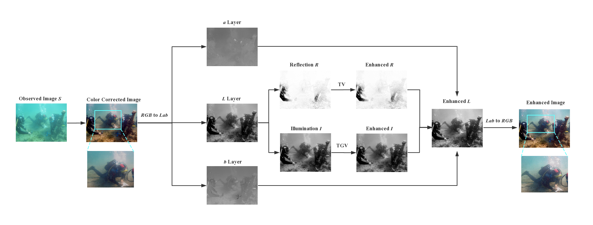
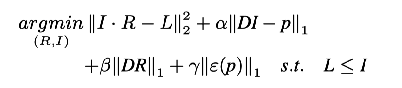
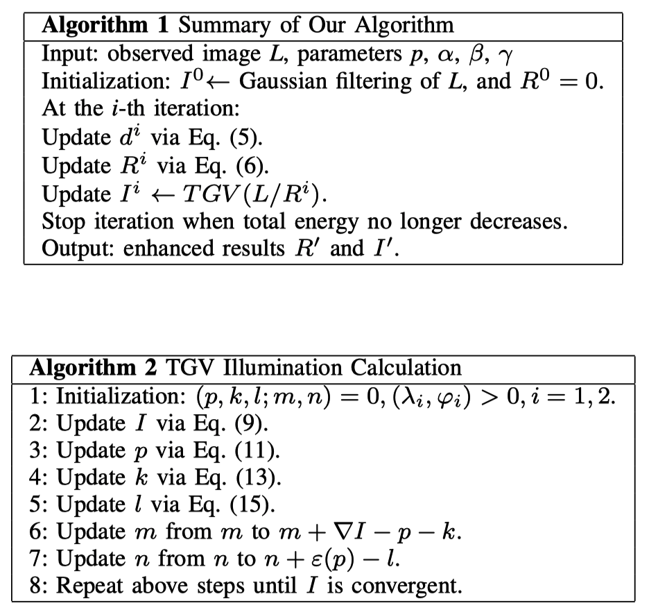
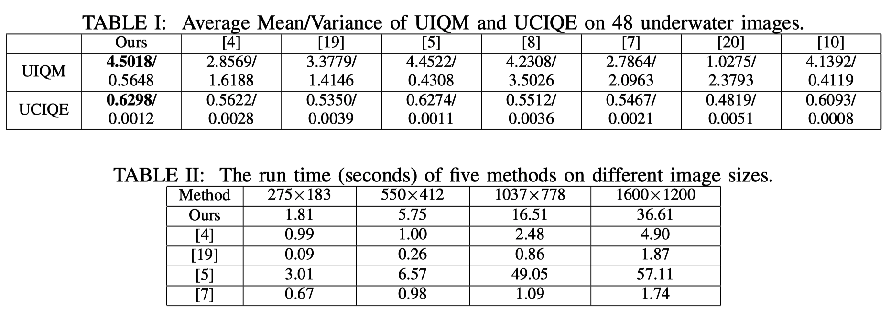
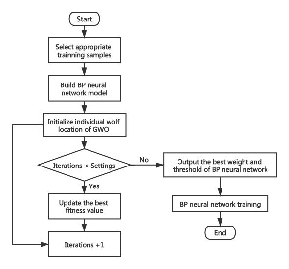
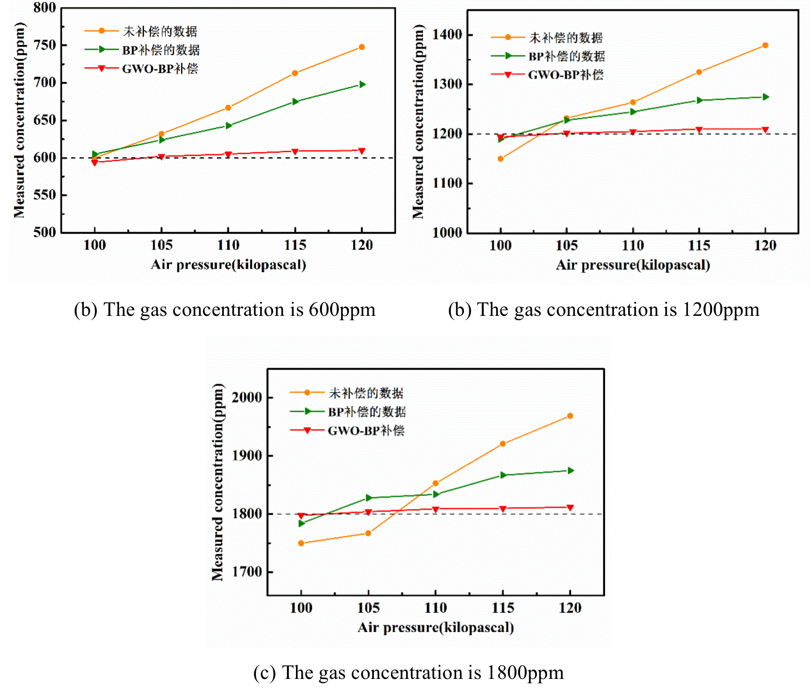

Research Details
Catalogue:
Underwater Image Enhancement with a Total Generalized Variation Illumination Prior
The Design and Realization of Methane and Carbon Dioxide Infrared Gas Sensors (SRTP)
Underwater Image Enhancement with a Total Generalized Variation Illumination Prior [pdf]
Purpose
High-quality underwater images are of great significance for human exploration and excavation. There are two interfering factors in underwater images:
Low contrast and atomization -> underexposed and blurry
Color deviation -> bluish or greenish
We designed a variational model based on Retinex to address these two issues.
Method
Three steps to promote the quality of underwater images:
|  |
Color correction
Retinex-based decomposition with a total generalized variation prior
Post-processing
In step2, Retinex algorithm is applied to decompose the reflection and illumination. Following the nature of the illumination, the total generalized variation (TGV) prior is introduced to the illumination:
|  |
To solve the proposed model, a high-efficiency iterative optimization scheme is designed and implemented by Matlab. The scheme can be summed up in Algorithm 1 and Algorithm 2.
|  |
Experiments
We carried out plenty of experiments are carried out and evaluate the enhanced images from two points: visual effect and objective evaluation.
 |
|  |
The Design and Realization of Methane and Carbon Dioxide Infrared Gas Sensors (SRTP) [pdf (Chinese Version)]
Purpose
A SF6 gas sensor is designed to effectively monitor the concentration of SF6 gas in power system. However, the ambient temperature and pressure have a great impact on the detection process. In that, we designed a real-time compensation algorithm based on BP neural network with Grey Wolf Optimization (GWO) introduced.
Method
BP neural network has some drawbacks, including slow convergence speed and getting into local minimum easily. GWO is employed to optimize the weight and threshold of BP neural network, which promotes the global searching ability greatly. Steps are as follows:
|  |
Experiments
We configured 600ppm, 1200ppm and 1800ppm SF6 gases. The above training process is carried out at different temperatures (10, 15, 20, 25, 30, 35, 40 degrees centigrade) and different pressures (100, 105, 110, 115, 120 kPa). The results are as follows and the swift of gas concentration is less than plus or minus 15 ppm.
 |
|  |